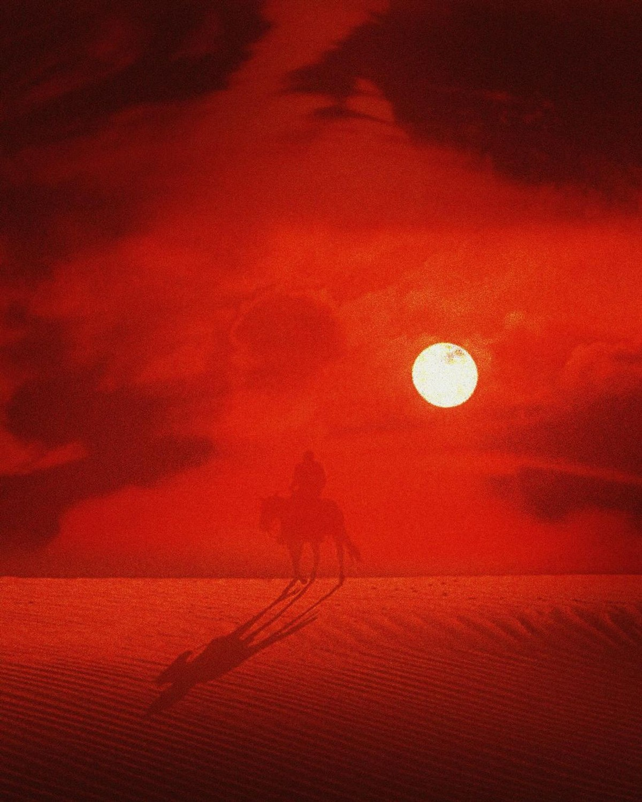
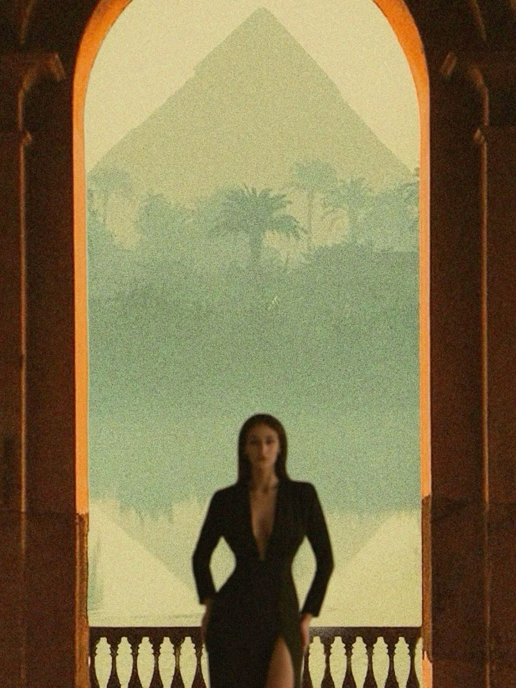
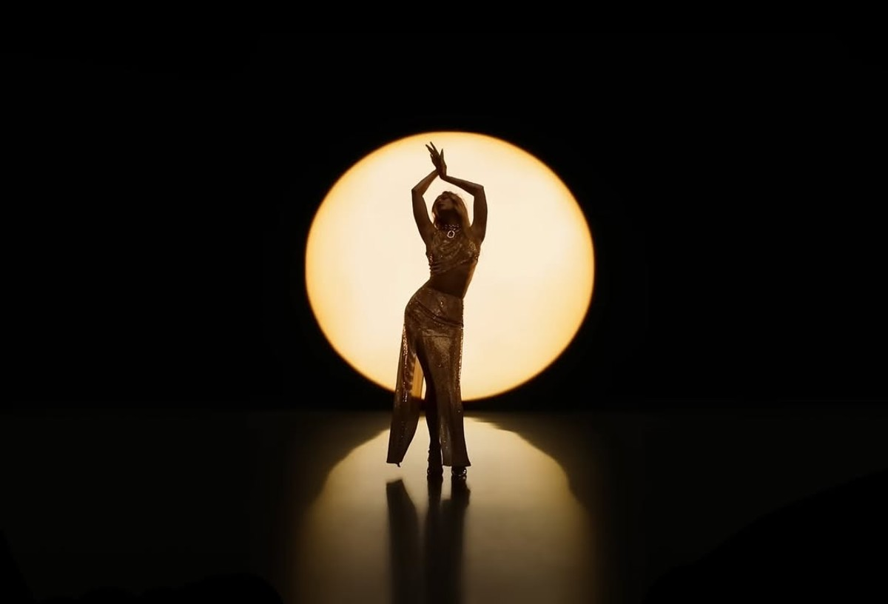
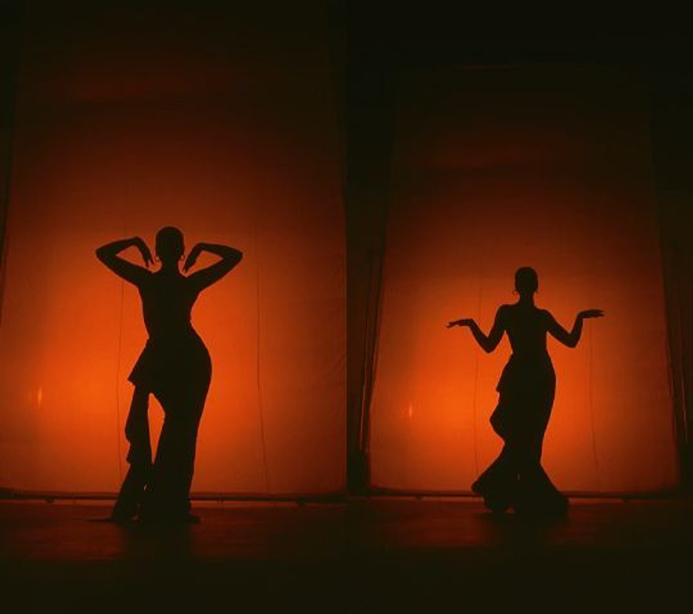

The earliest public image takes shape through Cairo's dramatic language, where gaze and restraint matter more than volume.

Egypt chapter
Cairo on screen, memory in motion.
This page absorbs the Stitch Egypt material and recasts it through drama, chronology, and atmosphere rather than generic media modules.
Three-year odyssey
Not a travel page. A chapter page.
Egypt here means television, visual legacy, and rootedness. It is the origin field of the brand rather than an optional destination.
Prime-time exposure sharpens image control and creates a recognizable silhouette in Egyptian media.
The Egypt chapter becomes heritage material for the full international identity.

Chapter I
Architecture, horizon, and ceremonial scale.

Chapter II
Animal force and movement through sand.

Chapter III
Concealment, pilgrimage, and return.